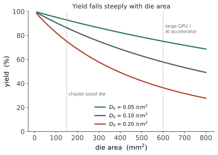

制造 IV · 良率、变异与可靠性
层次：本科少讲、业界核心 ｜ 这是学校与工业界之间落差最大的一页。 前面讲的都是"能不能做出来"。本页讲三件同样要命的事：做出来的有多少是好的（良率）、每一颗都不完全一样（变异）、以及它能用多久（可靠性）。在工业界，一个良率工程师对公司利润的影响，可能超过一个电路设计师。
一、良率：半导体经济学的中心
良率（yield）= 合格芯片数 / 理论芯片总数。它直接决定成本：
经典的负二项良率模型：
\(A\) 为芯片面积，\(D_0\) 为缺陷密度，\(\alpha\) 为缺陷聚集因子。
最关键的推论：良率随芯片面积急剧下降。

这条曲线解释了许多产业现象：
- 大芯片极贵：不只因为用料多，更因为良率低。高端 GPU 与 AI 加速器接近掩模版极限尺寸（第十一页），良率是核心成本因素；
- Chiplet 的经济动机：把 800 mm² 拆成 4 颗 200 mm²，总良率显著提升（第十五页）；
- 冗余设计：存储器普遍内置冗余行列，测试后用熔丝替换坏行——这使存储器良率远高于同面积的逻辑；处理器则用屏蔽坏核的方式分级出售（同一批晶圆切出不同规格的产品，即 binning）。"次品"不被扔掉，而是降级销售，这是半导体商业模式的重要一环。
二、变异：没有两个晶体管是一样的
即使没有致命缺陷，器件参数也天然分散。
分类：
- 系统性变异：可预测、有空间规律（光刻邻近效应、CMP 碟形效应、应力）——可以通过 OPC 与设计规则补偿；
- 随机变异：本质随机，无法补偿，只能统计处理。主要来源：
- 随机掺杂涨落（RDF）：先进节点的沟道中只有几十到上百个掺杂原子，其数目与位置的随机性直接造成 \(V_{th}\) 分散。这是量子/统计效应直接冲击工程的典型例子；
- 线边缘粗糙度（LER）：光刻胶边缘的原子级起伏；
- 金属栅功函数颗粒变异。
Pelgrom 定律（第八页）在此再次登场：\(\sigma_{\Delta V_{th}} \propto 1/\sqrt{WL}\)——器件越小，变异越严重。这是缩放的又一个内在代价：越小越快越密，但也越不一致。
设计上的应对：
- 统计时序分析（SSTA）：不再用单一延迟值，而用分布来做时序分析；
- 多角签核（第七页）：在快慢角同时验证；
- 保守设计裕量（guard band）：牺牲性能换可靠性——先进节点里，相当一部分理论性能被裕量吃掉了；
- 自适应技术：片上监测器 + 动态调压，按实际硅片性能调整工作点（芯片内部的闭环控制，🔗 自动化站）。
SRAM 最先出问题：它用最小尺寸器件、且要求六个管子彼此匹配（第十页），因而是变异的第一受害者，也常是决定芯片 \(V_{min}\) 的模块。
三、测试：怎么知道它是好的
不可能穷举测试：一个有 \(n\) 个输入、\(m\) 个触发器的电路，状态空间是 \(2^{n+m}\)。所以测试必须结构化。
- 故障模型：把物理缺陷抽象成可处理的模型，最经典的是固定型故障（stuck-at 0/1），还有跳变延迟故障、桥接故障。这是又一次"用抽象换可处理性"；
- ATPG（自动测试图形生成）：为每个可能故障自动生成能暴露它的输入向量——本质是一个 SAT 问题（🔗 cs 站）；
- 可测试性设计（DFT）：
- 扫描链：把所有触发器串成移位寄存器，使内部状态可以被直接读写——把时序电路的测试问题转化为组合电路的测试问题。这是 DFT 最重要的思想；
- BIST（内建自测试）：芯片自己产生图形并检验，存储器普遍使用；
- 边界扫描（JTAG）：测试封装与板级连接。
代价：DFT 会占用面积、增加时序负担、且扫描链是一个安全隐患（可用于提取芯片内部状态）。又一处权衡。
测试成本不容忽视：高端芯片的测试时间可达数分钟，测试设备（ATE）极贵，测试成本在总成本中占比可观。
四、可靠性：它能用多久
芯片在使用中会老化。主要机制：
| 机制 | 原理 | 表现 |
|---|---|---|
| NBTI/PBTI | 栅介质界面陷阱累积 | \(V_{th}\) 漂移，电路变慢 |
| 热载流子注入（HCI） | 高能载流子损伤栅氧 | 参数退化 |
| TDDB | 栅介质在电场下逐渐击穿 | 突发失效 |
| 电迁移（EM） | 电流带动金属原子迁移，导线出现空洞或短路 | 互连开路/短路 |
| 应力迁移、焊点疲劳 | 热机械应力 | 封装级失效 |
电迁移尤其塑造了设计规则：导线能承载的电流密度有上限（Black 方程给出寿命与电流密度、温度的关系），所以电源网络必须足够宽——这占用了大量布线资源，是先进节点布线拥塞的重要来源。
浴盆曲线与老化筛选：失效率随时间呈浴盆形——早期失效（制造缺陷）、随机失效期、耗损失效期。老化筛选（burn-in）用高温高压加速早期失效，把"早夭"的芯片在出厂前剔除。汽车与航天级芯片的筛选标准远严于消费级，这是同一颗芯片能卖出不同价格的原因之一。
设计中的应对：老化感知设计、留出退化裕量、片上传感器 + 自适应调压（补偿老化引起的变慢）。
五、这一页与全课的连接
良率与变异不是"制造部门的事"，它们反向决定了设计：
- 设计规则（DRC）本质上是"把制造能力翻译成几何约束"（承导论 §3）；
- 可制造性设计（DFM）：加冗余过孔、调整金属密度、规则化版图（先进节点的版图越来越像"梳子"，自由度被制造约束大幅剥夺）；
- Chiplet 的经济学完全建立在良率曲线上（第十五页）；
- 模拟设计的失配面积代价（第八页）就是变异在电路层的直接表现。
一句话总结这一页：能设计出来只是及格线；能高良率地造出来、测得出好坏、并且用十年不坏，才是产品。
线三结束。下一线进入研究生专业化与业界前沿——从先进封装与 Chiplet 开始，那正是本页良率曲线所指向的方向。